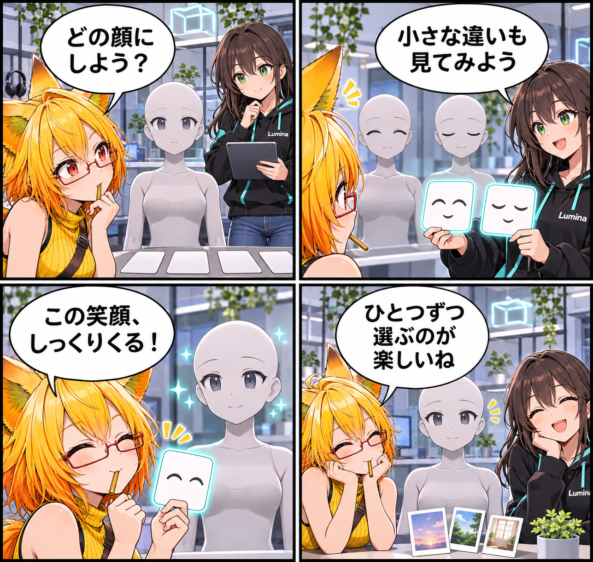

2026.11.07 / Development Log / Feature Spotlight
閑話休題：表情を、ひとつずつ選ぶ
新規実装の報告ではなく、VRASにすでにあるアバター調整を紹介する回です。表情・体形などに使われるBlendShapeを選び、今の一体へ少しずつ表情を重ねていく時間を眺めます。
今回は feature-spotlight（機能紹介） です。集計期間は2026-11-06 03:00:00 JSTから2026-11-07 02:59:59 JSTまで、対象はViewerの
main です。集計終了時点のHEADは aa5c7bc823b013fdfc622ec1d7aa1b85c9da8e5e、期間内コミットは0件でした。MainScene.unity の未コミット差分は、期間内の実装事実として確認できないため実績には含めていません。
表情の入口を、アバターごとに
VRASでは、読み込んだアバターの位置・回転・Scaleに加えて、Renderer単位の表示、Material Slot、BlendShapeを調整できます。BlendShapeは表情・体形・その他の形状を変えるための入口で、アバターごとに用意された項目を見ながら、目的の変化を選びます。
一度に決めず、見比べる
すべてのアバターが同じBlendShapeを持つわけではなく、見える結果は読み込んだアバターのデータに依存します。いま作りたい一枚や場面に合う変化を、ひとつずつ試して選ぶことが、アバターらしい表情へ近づく入口になります。
4コマの話
今回は、ろひが無表情のアバターを前に候補を急いで選ぼうとするところから始めます。ルミナと小さな変化を見比べるうち、そのアバターらしい笑顔が場面になじみます。今日完成した機能ではなく、現在使える調整の紹介です。
まとめ
VRASでは、読み込んだアバターのBlendShapeを調整し、表情・体形・その他の形状をアバターごとの対応範囲で扱えます。ひとつずつ選ぶ手間が、アバターらしい表情へ近づく入口になります。